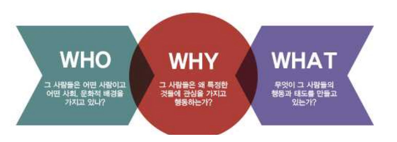

1. 사용자 분석은 프로젝트를 실제로 사용할 대상에 대한 조사이다.
2. 사용자 조사는 상황과 환경에 맞게 여러가지 방법을 선택하여 복합적으로 진행한다.
3. 이러한 복합적인 사용자분석을 통해 프로젝트의 실패 확률을 줄일 수 있다.

1. 설문조사를 통해 파악할 수 있는 리서치 결과는 거시적이며, 구조적인 이해는 가능하지만 세밀한 동기나 이용행태는 파악하기 힘들다.
2. 여러 리서치 결과들을 연결하고 분석하다 보면 그 연결을 통해서 새로운 아이디어가 나오기도 한다.
3. 내가 생각한 문제는 문제가 아닐 수 있다.
4. 내가 생각한 문제와 사용자가 직면한 문제는 매우 다른 경우가 많기 때문이다.